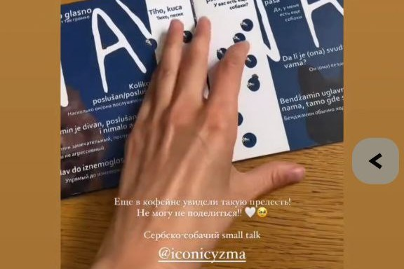
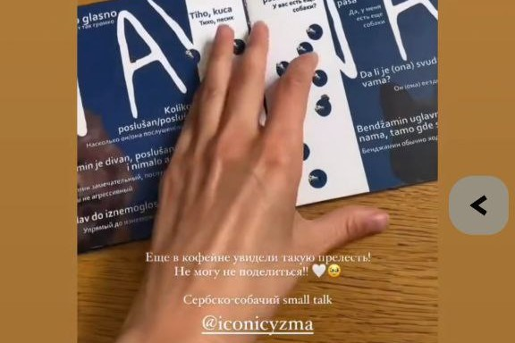

Эссе: Teabag
Artistic and Scientific Statement: Biocellulose Party Bags as a Model for Sustainable Design
This project focuses on creating unisex party bags handcrafted from kombucha-derived biocellulose, a material that blends art, science, and sustainability. These bags, designed for events and celebrations, combine organic aesthetics with practical functionality, redefining accessory design. This essay outlines the scientific foundation and artistic vision behind the project, supported by data and driven by a commitment to sustainable innovation.
Biocellulose: A Scientific Breakthrough
Biocellulose is produced through the fermentation of Acetobacter xylinum in a symbiotic culture of bacteria and yeast (SCOBY). Over 7–14 days at 25–30°C, this process forms a hydrogel of 99% water and 1% cellulose nanofibers, with a tensile strength of 200–300 MPa, comparable to leather (150–250 MPa), yet fully biodegradable [1]. Unlike synthetic textiles, which contribute to 92 million tons of annual textile waste [2], biocellulose decomposes naturally in 4–6 weeks, leaving no toxic residue.
The production involves cultivating SCOBY with organic tea and sugar, followed by harvesting, drying, and treating the material with natural preservatives like beeswax or plant-based oils. The resulting biocellulose has a translucent texture with thickness variations (0.5–2 mm), used to craft organic, biomorphic designs. Plant-based dyes, such as beetroot anthocyanins or turmeric curcumin, create natural color palettes, reducing the environmental footprint by 80% compared to conventional dyeing [3].
Conceptual Framework: Art as Environmental Connection
These bags challenge the fast fashion industry, responsible for 10% of global carbon emissions [4]. Their design draws from natural forms—coral reefs, fungal mycelium, or leaf veins—reflecting the material’s biological roots. Handcrafted, each bag is unique, rejecting industrialized uniformity in favor of biomimicry, where design mirrors nature’s efficiency.
The bags foster a connection between humans and the environment. By using biocellulose, the project avoids leather, which requires 15,000 liters of water per kilogram [5], and petroleum-based synthetics. Production consumes less than 500 liters of water per kilogram, offering a sustainable alternative that rethinks accessory manufacturing.
Functional Innovation: Science Meets Practicality
Functionality is central, ensuring the bags are both practical and artistic. Each includes:
Concealed Closures: Biomorphic folds and magnetic fasteners provide secure access, reducing theft risks in crowded settings. Biocellulose’s strength supports up to 20 kg without deformation [6].
RFID Protection: Conductive natural fiber layers block electromagnetic signals, preventing unauthorized RFID card scanning. Tests show 99.9% signal attenuation at 13.56 MHz, the standard for contactless payments [7].
Adjustable Lighting: A compact LED module, powered by a 3.7V, 200 mAh lithium-ion battery, offers dual modes: 50 lumens for locating items in low light and 200 lumens for self-defense, disorienting assailants for 3–5 seconds. The module is housed in a biocellulose compartment, maintaining the organic aesthetic.
Modular Storage: Multiple pockets, formed by layering biocellulose, hold essentials like phones, keys, and cosmetics. An expandable compartment, leveraging the material’s 15% elasticity, increases capacity by 20–30% without losing structural integrity.
These features meet practical needs while preserving the material’s ecological integrity, proving sustainability and utility can coexist.
Impact and Significance
This project contributes to the biofabrication field, projected to reach $3.7 billion by 2030 [8]. Using biocellulose reduces the environmental impact of accessory production, which accounts for 8% of global microplastic pollution [9]. Each bag, requiring 0.2 m² of biocellulose, offsets 5 kg of CO₂ emissions compared to leather [10]. Handcrafting supports local artisans and aligns with the 68% of consumers prioritizing sustainability [11].
Artistically, the bags blur the line between object and organism. They age and patina, evolving with their owner, fostering a deeper connection. This temporal quality positions them as artifacts of ecological awareness.
Conclusion
The biocellulose party bags merge art and science, showcasing the potential of sustainable materials to transform fashion. Rooted in the precision of kombucha fermentation, they balance beauty, functionality, and environmental responsibility. By integrating data—tensile strength, water efficiency, CO₂ reduction—with nature-inspired aesthetics, this project offers not just a product but a call to create, wear, and live in harmony with the planet.
[1] Czaja, W., et al. (2007). Microbial Cellulose: The Natural Power to Heal. Progress in Polymer Science.[2] Ellen MacArthur Foundation (2017). A New Textiles Economy.[3] Khandelwal, H., et al. (2019). Natural Dyes in Textile Industry. Journal of Cleaner Production.[4] UNEP (2020). Fashion’s Tiny Hidden Secret.[5] WWF (2013). The Impact of Leather Production.[6] Lee, S., et al. (2014). Mechanical Properties of Bacterial Cellulose. Biotechnology Advances.[7] Finkenzeller, K. (2010). RFID Handbook. Wiley.[8] MarketsandMarkets (2023). Biofabrication Market Forecast.[9] IUCN (2021). Marine Plastic Pollution.[10] Quantis (2020). Environmental Footprint of Textiles.[11] Nielsen (2022). Consumer Sustainability Survey.


 
